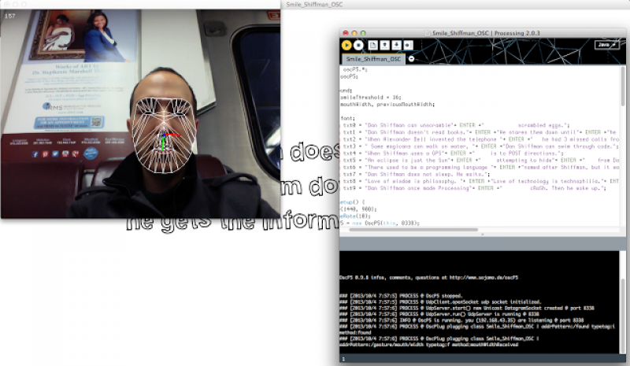
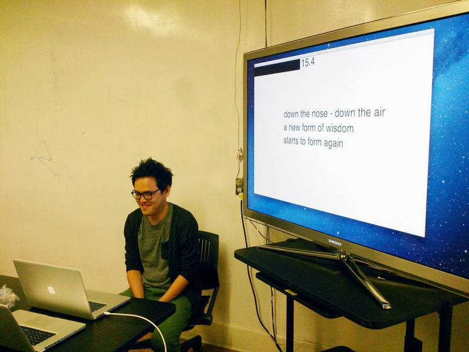
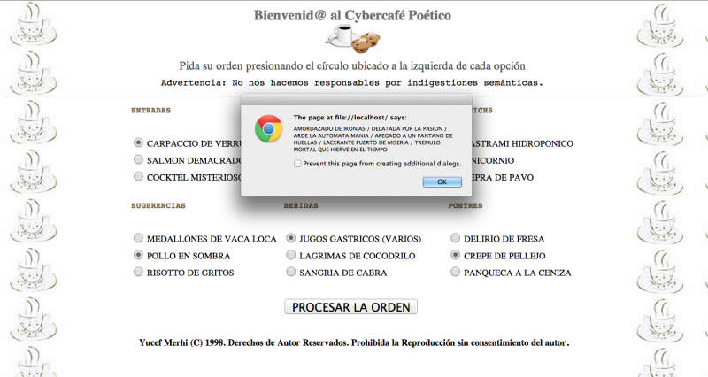
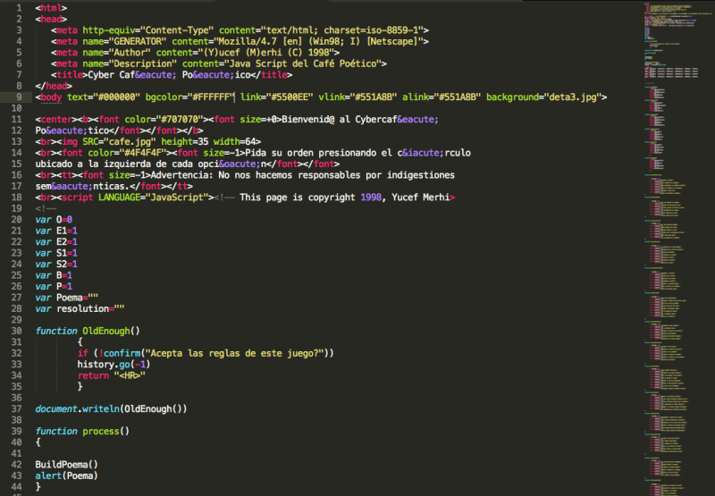

Week 6
This is a realtime poetry generator that grabs, parses, and creates random poems from current headlines and poetic sentences. Th app was written in Python and Flask.
Week 5
An interactive/real time poem made with trained Supported Vector Machine and Histogram of Oriented Gradients. This work continues the exploration of new iterations based in sensors and image recognition software that can translate different stimuli into metaphors and other poetic constructions. As you can see, sentences respond to the movements of the hand.
Week 4

I made an interactive app that analyzes the width of the mouth via OSC and delivers a short poem. OSC values are matched with sentences added to a Processing sketch. Both the values and the sentences are displayed on real time on the screen. The app employs Syphon and Processing.

Week 3
The second iteration comes from the past. The JS code, circa 1998, renders a menu with exotic names. You can ask for a gastric juice or have a unicorn sandwiche. After selecting the items to be consumed, it creates a random poem. The app is based on a performance presented at the café of the Museum Jacobo Borges (Caracas) during the same year.


Week 2
{kind=link}
My first experiment in the development of a future poetry-based automated system was inviting people to write in different notepads what they were seeing, hearing, and feeling. This experience enabled me to reproduce one possible behavior of this “sensitive” system. We use all our senses as sensors to gather information. The information is processed, analyzed and translated into words or actions. A very complex procedure if we dig into the neuronal aspect. So, how a machine can not only replicate continuous translation exercise but also making out of that a poem?
Week 1
{kind=link}
Before presenting my system, I decided to “copy and paste” a summary of the reading “The Designer as Producer,” an essay by Ellen Lupton, published in The Education of a Graphic Designer, ed. Steven Heller (New York: Allworth Press, 1998), 159-62. I added some brief notes that I plan to expand in my own mind.
In 1934, the German critic Walter Benjamin wrote “The Author as Producer,” a text that attacked the conventional view of authorship as a purely literary enterprise Benjamin was a Marxist, committed to the notion that the technologies of manufacture should be owned by the workers who operate them. In Marxist terminology, the “means of production” are the heart of human culture and should be collectively owned Benjamin demanded that artists must not merely adopt political “content,” but must revolutionize the means through which their work is produced and distributed. Technical progress is for the author as producer the foundation of political progres To bridge the divide between author and publisher, author and reader, poet and popularizer, is a revolutionary act. Benjamin applauded Dada and Surrealism for challenging the institutions of art, and yet such experimental forms were forbidden in the Soviet state he so admired. Describing the relation of authorship to technology, Benjamin predicted that the writer will begin to compose his work with a typewriter instead of a pen when “the precision of typographic forms has entered directly into the conception of his books. Within the professional context of graphic design, “production” is linked to the preparation of “artwork” for mechanical reproduction, rather than to the intellectual realm of “design. The proletarianization of design offers designers a new crack at materialism, a chance to re-engage the physical aspects of our work. Whereas the term “author,” like “designer,” suggests the cerebral workings of the mind, production privileges the activity of the body. When Benjamin called for authors to become producers, he did not mean for them to become factory workers alienated from the form and purpose of the manufactured thing. The challenge for educators today is to help designers become the masters, not the slaves, of technology
As Benjamin phrased it in 1934, the goal is to turn “readers or spectators into collaborators” (233). – collaborators: participants/users
+Language is a raw material – enhance verbal literacy +Theory is a practice – merge thinking with making +Writing is a tool – use writing as a device for prototyping +Technology is physical – deal with the human, material response to information +The medium is on the menu – find the many ways that information an ideas are disseminated
For the designer to become a producer, she/he must have the skills to begin directing content, by critically navigating the social, aesthetic, and technological systems across which communications flow. – which reminds me the skills of an entrepreneur